25 agosto, 2016 | di redazione
Soltanto a poche ora dal tragico terremoto che ha colpito una vasta area dell’Italia centrale, causando la distruzione di interi paesi ed un pesante bilancio in termini di vite umane, tutti i principali provider mondiali che operano nel settore aerospaziale si sono mobilitati per contribuire attivamente alle operazioni di soccorso, con acquisizioni satellitari aggiornate delle aree colpite.
La European Space Imaging, che gestisce la programmazione sul territorio europeo dei satelliti WorldView e GeoEye-1 della DigitalGlobe, già dalle prime ore di stamattina ha attivato una programmazione per acquisire immagini in altissima risoluzione sia nella giornata di oggi che in quella di domani. La prima acquisizione è stata effettuata ieri mattina alle 11:21 dal satellite WorlView-2
Eccola a disposizione sui server di Planetek Italia (grazie) e rilasciata dal fornitore (European Space Imaging / Digital Globe) in CC-BY-NC: http://out.planetek.it/Amatrice-Earthquake_24ago2016.zip

Posted in News | 2 Comments »
29 dicembre, 2014 | di Andrea Borruso
Diversi geoportali, piccoli e grandi, di Pubbliche Amministrazioni da ogni parte del mondo, sono basati su tecnologia ESRI ArcGIS. All’utente di solito viene esposta un’interfaccia di consultazione del catalogo dei dataset (come quella del geoportale della Regione Siciliana) e/o l’accesso diretto ai dati e alla loro rappresentazione tramite servizi OGC standard come WMS, WFS e WCS.
Ma ci sono diverse altre caratteristiche interessanti rese disponibili da queste tecnologie e che molto spesso ignoriamo, la cui conoscenza ci consente di accedere ad un numero molto più ampio di informazioni e dati. Tutto questo oggi è a maggior forza interessante, grazie alle politiche Open Data realizzate da molte Pubbliche Amministrazioni e anche perché dal 19 marzo 2013i ”tutti i dati e documenti che le pubbliche amministrazioni pubblicano con qualsiasi modalità, senza l’espressa adozione di una licenza d’uso, si intendono rilasciati come dati aperti (open data by default)” (cit. dati.gov.it, mentre dal punto di vista normativo si tratta dell’articolo 52, comma 2 del CAD).
In questo post sottolineerò alcuni elementi relativi all’accesso ai dati tramite query via interfaccia REST (più propriamente tramite API REST).
Introduzione
Le API REST di ArcGIS – REST è l’acronimo di Representational State Transfer - forniscono una semplice interfaccia di accesso web ai server cartografici di questa casa software, sia ai dati/servizi che ad alcuni processi. Il tutto è quindi accessibile tramite una serie di URL gerarchici, che identificano ciò a cui si vuole accedere. L’URL di default di accesso ha di _default _questa struttura:
http://<host>:/arcgis/rest/services
Ad esempio quello della Regione Siciliana è questo:
http://map.sitr.regione.sicilia.it/ArcGIS/rest/services
E aprendo l’indirizzo sono elencati dati e servizi disponibili in questo server.

La documentazione ufficiale generale è molto ricca e vasta e non aggiungerò altri dettagli generici.
A seguire invece alcuni esempi di query via ArcGIS REST API, in modo da apprezzarne la ricchezza e le modalità di accesso.
Interroghiamo una risorsa
Per gli esempi di questo articolo farò riferimento alla Regione Umbria, che ha aperto da poco i suoi dati cartografici. Dal suo portale open data possiamo leggere l’URL pubblico del server ArcGIS.

Si legge
http://geo.umbriaterritorio.it/arcgis/
Bisogna aggiungere (vedi sopra) “rest/services/” e abbiamo
http://geo.umbriaterritorio.it/arcgis/rest/services/
A questo punto non resta che sfogliare un po’ la directory pubblica e scegliere un layer su cui eseguire una query. Userò il dataset dei “NUMERI CIVICI”, che si raggiunge facendo click su Public > ECOGRAFICO_CATASTALE_WGS84 (MapServer) > NUMERI CIVICI.
Scorrendo la pagina verso il basso è visibile il tasto “Query“, tramite il quale è possibile interrogare il dataset.
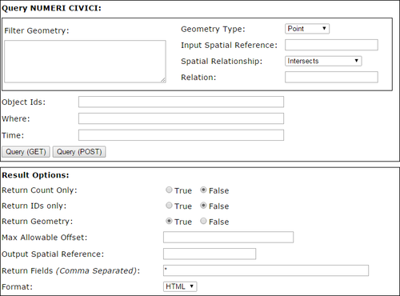
Per lanciare la prima interrogazione devo inserire almeno un criterio di ricerca. Ad esempio il numero civico con “ID=1″ (ogni elemento ha sempre un identificativo numerico associato). La pagina html con il risultato dell’interrogazione mi fornisce informazioni sia sugli attributi che sulla geometria dell’elemento.
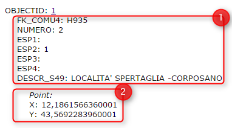
Posso fare allora una query per attributo: tutti gli elementi che contengono nel campo “DESCR_S49″ la stringa “CORPOSANO”. Nell’interfaccia leggiamo che ci sono 47 record che soddisfano questa condizione e l’output è in HTML. Ci sono però altri formati di output tra cui KML e JSON; questo l’output in JSON della stessa query.

Questi due formati quindi mostrano nei fatti, come una query REST su server ArcGIS sia un’ulteriore modalità di accesso al dato grezzo.
Query spaziale
E’ possibile eseguire anche delle interrogazioni spaziali di complessità variabile. Ad esempio posso estrarre tutti i civici che ricadono tra queste coordinate 12.384356,43.108511,12.388869,43.110765 (<xmin>,<ymin>,<xmax>,<ymax>).
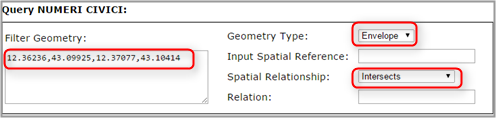
Posso farne il download con GDAL/OGR (vedi sotto) e ottenere rapidamente i dati in formato spaziale e al contempo visualizzarne rapidamente una loro rappresentazione.

Accesso tramite GDAL/OGR a una query
La libreria GDAL/OGR ha i driver di accesso in lettura e scrittura al formato GeoJSON. Uno degli output delle query di sopra è proprio JSON e questa libreria lo riesce a leggere nativamente proprio come GeoJSON.
L’ultima query si effettua chiamando questo lungo URL:
http://geo.umbriaterritorio.it/ArcGIS/rest/services/Public/ECOGRAFICO_CATASTALE1_WGS84/MapServer/0/query?geometry=&geometryType=esriGeometryPoint&inSR=&spatialRel=esriSpatialRelIntersects&relationParam=&objectIds=&where=DESCR_S49+LIKE+%27%25CORPOSANO%25%27&time=&returnCountOnly=false&returnIdsOnly=false&returnGeometry=true&maxAllowableOffset=&outSR=&outFields=*&f=pjson
Nell’indirizzo di sopra sono visibili tutti i parametri disponibili per effettuare un’interrogazione, ma sopra abbiamo valorizzato soltanto la stringa di testo da ricercare in un determinato campo (parametro “where”) e il formato di output (parametro “f”). Questo URL fa da source per GDAL/OGR. Se voglio avere tutte le informazioni su questa sorgente di dati vettoriali userò il classico ogrinfo:
ogrinfo -ro "http://geo.umbriaterritorio.it/ArcGIS/rest/services/Public/ECOGRAFICO_CATASTALE1_WGS84/MapServer/0/query?geometry=&geometryType=esriGeometryPoint&inSR=&spatialRel=esriSpatialRelIntersects&relationParam=&objectIds=&where=DESCR_S49+LIKE+%27%25CORPOSANO%25%27&time=&returnCountOnly=false&returnIdsOnly=false&returnGeometry=true&maxAllowableOffset=&outSR=&outFields=*&f=pjson" OGRGeoJSON
“OGRGeoJSON” è per GDAL/OGR il nome predefinito del layer di una sorgente GeoJSON. “-ro” perché imposto l’accesso in sola lettura.
Se voglio convertire in ArcView Shapefile l’output di questa query userò ogr2ogr:
ogr2ogr CORPOSANO.shp "http://geo.umbriaterritorio.it/ArcGIS/rest/services/Public/ECOGRAFICO_CATASTALE1_WGS84/MapServer/0/query?geometry=&geometryType=esriGeometryPoint&inSR=&spatialRel=esriSpatialRelIntersects&relationParam=&objectIds=&where=DESCR_S49+LIKE+%27%25CORPOSANO%25%27&time=&returnCountOnly=false&returnIdsOnly=false&returnGeometry=true&maxAllowableOffset=&outSR=&outFields=*&f=pjson" OGRGeoJSON
Come esempio, riporto qui il download fatto con GDAL/OGR nei formati ArcView Shapefile, GeoJSON e KML.
Web mapping a partire da query
Queste query possono essere visualizzate in maniera molto efficace anche in un’interfaccia di web mapping. Sia a partire dal salvataggio dell’output, che tramite chiamata diretta in realtime. La cosa è inoltre resa semplice da una bella libreria rilasciata in open source da ESRI e basata su Leaflet: http://esri.github.io/esri-leaflet.
La query di sopra (quella sulla stringa “CORPOSANO”) ad esempio si può rappresentare rapidamente come sotto (click qui per aprire a schermo intero).
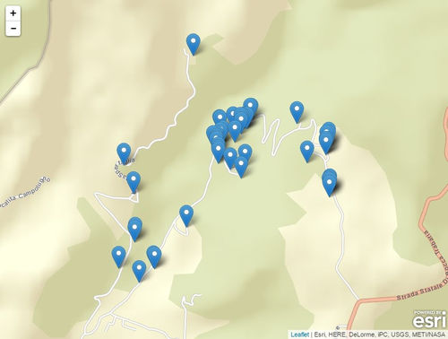
Il codice lo trovate qui: https://github.com/tanto/arcgisqueryrest/blob/gh-pages/index.html
Alcune note in conclusione
Sono rimasto molto in superficie, ma l’intento è quello di mostrare un punto di ingresso poco noto e utile, visto il sempre maggior numero di dati spaziali oggi disponibili e aperti. Di default l’output di queste _query _è limitato a 1000 risultati, quindi è necessario “ciclare” le chiamate. Ad esempio per ID a gruppi di 1000 record:
Il totale (190140 record), da conoscere prima di fare partire il ciclo, si ricava ad esempio con questa query. Ci sono altri modi per ciclare tra i record, questo è solo un esempio.
L’accesso REST è molto utile anche con sorgenti di tipo raster, ma magari lo scrive qualcun altro, in un altro post  .
.
L’URL con struttura “http://<host>:/arcgis/rest/services” è quello di default. Chi gestisce il server potrebbe usare uno schema diverso.
Questo post è dedicato al giovane Padawan “Flavio“, che mi ha fatto scoprire questa pagina e ha dato la stura alla stesura di questo testo.
Non mi RESTa che augurarvi un buon 2015!
Posted in Didattica | 9 Comments »
10 gennaio, 2014 | di Giovanni Allegri

Abbiamo deciso di pubblicare la traduzione di un recente articolo di Serge Wroclawski, “Why the World Needs OpenStreetMap“, perché ci sembra importante riconoscere e sottolineare il valore di OSM al di là della sua utilità pratica e della sua gratuità. Ci scusiamo per eventuali inesattezze, non siamo traduttori professionisti!
Perché abbiamo bisogno di OpenStreetMap
Ogni volta che parlo con qualcuno di OpenStreetMap, inevitabilmente mi viene chiesto “Perché non usi Google Maps?”. Da un punto di vista strettamente pratico si tratta di una domanda ragionevole, però la questione non riguarda solo l’utilità (di tale scelta), ma che tipo di società vogliamo. Ne ho parlato nel 2008 in una conferenza su OpenStreetMap che ho tenuto al primo convegno MappingDC. I concetti che riporto qui sono gli stessi, ma trattati in maniera più estesa.
Nell’800 le persone avevano il problema del tempo, non in termini di tempo a disposizione, ma di che ora fosse. Gli orologi esistevano già, ma ogni città aveva il suo “tempo locale”, che si sincronizzava sugli orologi della città, o più spesso, le campane delle chiese. L’orario delle ferrovie, e infine il Tempo Medio di Greenwhich, ha soppiantanto gli orari locali e oggi la maggior parte della gente considera il tempo come qualcosa di universale. Negli Stati Uniti questo è avvenuto inizialmente grazie all’adozione del tempo standard da parte delle Ferrovie e successivamente delle università e delle grandi imprese.
L’equivalente attuale del dilemma del tempo è la posizione geografica, e diversi soggetti stanno cercando di diventarne il riferimento assoluto. Google spende un miliardo di dollari l’anno per mantenere le proprie mappe, senza considerare il miliardo e mezzo speso per comprare Waze. Non è certo l’unica azienda che sta cercando di prendersi tutto lo spazio, visto che anche Nokia si è comprata Navtek e TomTom e Tele Atlas stanno cercando di fondersi (in realtà TomTom ha già acquisito TeleAtlas, N.d.T.). Tutte queste aziende vogliono diventare il riferimento assoluto di ciò che è posizionato sulla Terra. Questo perché ciò che ha una posizione geografica è diventato un grande business. Con i GPS in ogni auto, ed uno smartphone in ogni tasca il “mercato” di chi vuole dirti dove sei e dove devi andare è diventato feroce.
Con tutte queste aziende perché c’è bisogno di un progetto come OpenStreetMap? La risposta è semplice, perché in una società nessuna azienda dovrebbe avere il monopolio sui luoghi, così come nessuna azienda ha avuto il monopolio del tempo nell’800. I luoghi sono un bene comune, e dando ad una singola entità tutto questo potere gli viene dato non solo il potere di dirti la tua posizione, ma anche di poterla manipolare. Ci sono tre aspetti in questione: chi decide cosa deve essere visualizzato sulla mappa, chi decide dove ti trovi e dove dovresti andare, e la privacy personale.
Chi decide cosa debba essere visualizzato su una mappa di Google? Ovviamente la risposta è Google. Mi è capitato di affrontare la questione durante un incontro con un’amministrazione locale nel 2009: erano preoccupati all’idea di usare Google Maps sul loro sito web perché Google decide quali aziende/attività commerciali mostrare. Avevano ragione ad essere preoccupati dal momento che un’amministrazione pubblica deve rimanere imparziale, e delegando le proprie mappe ad un soggetto terzo si trovano a cederne anche il controllo. E’ inevitabile, se non lo stanno già facendo, che Google cerchi di monetizzare le ricerche geografiche, dando priorità a certi risultati rispetto ad altri. Ad esempio, sarà una coincidenza ma se provo a cercare “colazione” vicino a casa mia, il primo risultato è Ristoranti SUBWAY®. Google non è certo l’unico distributore di mappe, è solo un esempio. Il punto è che quando si usa un qualsiasi provider di mappe, gli viene dato il potere di decidere quali siano gli elementi a cui dare risalto, o quali non debbano essere proprio mostrati.
La seconda questione riguarda il posizionamento. Chi definisce cosa sia “vicino”, o se sia meglio andare in una certa direzione piuttosto che un’altra? Questo problema è stato argomento di un articolo dell’ ACLU (n.t.: Unione americana per le libertà civili) dove veniva discusso l’algoritmo utilizzato da un certo servizio di mappe, il quale nel calcolo di un percorso (in auto, in bici o a piedi) prendeva in considerazione la pericolosità o la sicurezza del contesto. C’è da chiedersi chi stabilisce se un luogo sia sicuro o meno, o se piuttosto la parole “sicuro” sia soltanto un termine in codice per riferirsi a qualcosa di più sinistro. Ad oggi, Flickr colleziona informazioni relative agli spazi geografici sulla base delle fotografie, che vengono esposte tramite un’API pubblica. Utilizzando queste informazioni possono suggerire tags per le nostre fotografie, ma i cluster geografici ottenuti dalle loro elaborazioni potrebbero essere usati per controllare e manipolare qualsiasi altra informazione, dai pattern del traffico ai prezzi degli immobili, perché quando un provider di mappe diventa sufficientemente grande, diventa una fonte di “verità”.
Infine, queste società sono incentivate a raccogliere informazioni su di noi con modalità che potrebbero non piacerci. Quando utilizziamo i loro servizi, sia Google che Apple acquisiscono informazioni sulla nostra posizione. Possono usare questi dati per migliorare l’accuratezza delle mappe, ma Google ha già annunciato che intende usarla per analizzare la correlazione tra le ricerche che facciamo e i luoghi dove ci dirigiamo. Con 500 milioni di telefoni Android si tratta di un enorme quantità di informazioni, ottenute a livello individuale, sulle abitudini della gente sia che stia facendo una passeggiata, che stia andando a lavoro, dal dottore o, magari, che stia partecipando ad una protesta. E’ evidente che non si possono ignorare le implicazioni sociale che comporta la disponibilità di così tanti dati in mano ad una singola azienda, indipendentemente da quanto si dichiari benevola. Aziende come Foursquare utilizzano il mezzo della “gamification” per coprire quello che di fatto è un’opera di acquisizione di dati, e anche Google è entrata nella partita della “gamification” con Ingress, un gioco che sovrappone un mondo virtuale a quello reale e porta gli utenti a raccogliere foto e informazioni stradali con l’obiettivo di combattere, o favorire, un’invasione aliena.
Visualizza mappa ingrandita
Ora che abbiamo identificato i problemi, possiamo esaminare come OpenStreetMap li risolva tutti. In termini di contenuti geografici, OpenStreetMap è sia neutrale che trasparente. OpenStreetMap è una sorta di wiki che chiunque al mondo può editare. Se un negozio manca da una mappa, può essere aggiunto dallo stesso esercente o magari da un cliente. Per quanto riguarda la visualizzazione cartografica, ogni persona o azienda può crearsi la mappa come vuole, tuttavia la principale mappa su OpenStreetMap.org utilizza software cartografico FLOSS (Free/Libre and Open Source Software) e un foglio di stile (per la vestizione cartografica, N.d.T.) disponibile con una licenza di pubblico dominio, da cui chiunque può partire per costruirsene uno proprio. In altre parole, chiunque ne abbia bisogno può crearsi la propria mappa basandosi sugli stessi dati.
Analogamente, mentre i router (i software per il calcolo dei percorsi ottimali, N.d.T.) più popolari di OpenStreetMap sono FLOSS, se un’azienda decidesse di usare un’altra tecnologia, un utente può sempre utilizzare il proprio software e potrebbe facilmente confrontare i risultati, ottenuti dagli stessi dati, per verificare eventuali anomalie.
Infine, un utente può scaricare liberamente tutti o parte dei dati di OpenStreetMap per utilizzarli offline. Questo significa che è possibile usare i dati di OpenStreetMap per navigare senza dover comunicare ad alcuno la propria posizione.
OpenStreetMap rispetta le comunità e rispetta le persone. Se non stai già contribuendo a OSM, valuta la possibilità di farlo. Se già contribuisci, grazie.
(Serge Wroclawski “Why the World Needs OpenStreetMap“, CC-BY-SA)
Posted in Entropia | 5 Comments »
18 febbraio, 2013 | di Andrea Antonello
Nel corso del 2012 ho avuto il piacere di collaborare al progetto FreeGIS. Il mio compito è stato quello di testare l’usabilità di un particolare software di mappatura di schemi di dati per mappare e successivamente convertire un set di dati della provincia di Bolzano verso lo schema di dati INSPIRE.
Considerato che ogni volta che scrivo la parola INSPIRE mi tremano le mani e ogni volta che ne parlo mi trema la voce, è stata un’esperienza interessante, anche al fine di smitizzare e abbattere alcuni muri, nonché confermare alcune assurdità che la complessità degli standard porta inevitabilmente con sé.
La certezza che ora ho è che la migrazione di dati verso gli schemi INSPIRE è una procedura molto complessa, ma non impossibile, e che richiede freddezza nella preparazione e personale capace e aggiornato da un punto di vista tecnico.
Io in generale non credo ai software dall’unico pulsante magico.
Credo però nel senso di una procedura guidata. Credo in un software che possa semplificare i passaggi importanti di tale procedura, supportando soprattutto la leggibilità degli schemi di dati e la consistenza delle mappature che si vanno ad operare.
Humboldt & Hale
Il software che ho avuto modo di testare (e poi anche estendere) si chiama Humboldt Alignment Editor (Hale per gli amici) e nasce da un progetto europeo che ha coinvolto 26 partner fra il 2006 e il 2011 (fra i quali gli italiani di CNR-IREA, GISIG, Telespazio e dell’Università di Roma). Il progetto Humboldt si è occupato principalmente dell’armonizzazione dei dati a livello europeo. Data la moltitudine e diversità dei dati presenti nelle varie organizzazioni europee, naturalmente non si trattava di re-inventare la magia nera, bensì di creare strumenti che potessero supportare il processo di implementazione.
Dal progetto Humboldt è nato il Data Harmonization Panel (DHP), una piattaforma di esperti nell’armonizzazione dei dati spaziali. Lo stesso DHP si pone tutt’oggi due importanti obiettivi:
- lo sviluppo ed il supporto degli strumenti sviluppati in Humboldt
- il supporto di un framework di formazione
Del progetto Humboldt oggi viene sviluppato in modo attivo praticamente solo la componente Hale. Il progetto è rilasciato con licenza Free ed Open Source alla community per facilitarne l’interazione ed il miglioramento.
E’ proprio la natura open del progetto che mi ha portato prima ad avvicinarmi a Hale attraverso FreeGIS e poi, in un secondo momento, quando ho avuto il piacere di essere chiamato a svilupparne alcune funzionalità nel team geospaziale del Fraunhofer IGD (attuale centro di coordinamento del progetto).
E’ stata questa collaborazione che mi ha ispirato a scrivere un articolo riguardante Hale in modo da renderlo un pochino più noto al di fuori della cerchia accademica e dei progetti europei.
Ma bando alla storia e passiamo alla parte pratica.
Utilizzare Hale
Per mostrare il funzionamento di base di Hale mi rifarò in parte al progetto FreeGIS usando i dati della Provincia di Bolzano e descritti nel eGeo, il geoportale della provincia. Mi riferirò in particolare al set di dati di quello che è definito in INSPIRE RoadLink dello schema dei TransportNetwork.
Per chi volesse cimentarsi, è possibile scaricare Hale dall’area di download del sito del progetto per i sistemi operativi più diffusi.
Una volta lanciato, Hale si presenta in questo modo:
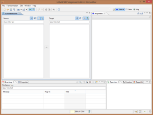
Le parti più importanti sono indubbiamente le viste dello Schema explorer e dell’Alignment.
Hale è stato concepito per mappatura di strutture di dati molto complesse, fra schemi di dati xml come lo possono essere ad esempio gli schemi CityGML. Il nostro esempio non renderà onore a questo potenziale, in questa sede si vuole piuttosto introdurre lo strumento in generale.
Definire lo schema di arrivo
La prima cosa da definire, è lo schema verso il quale si desidera mappare lo schema dei dati originali. Nel nostro caso si parla di dati del TransportNetwork, quindi è necessario caricare lo schema xml del RoadTransportNetwork di INSPIRE. Tale schema è scaricabile qui.
Una volta scaricato sul proprio disco rigido, è possibile importarne la definizione dal menu di import attraverso l’operazione target schema:
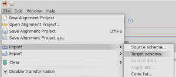
definendo poi nella procedura guidata il file da importare:

per poi trovarsi lo schema visualizzato nella sua struttura ad albero in Hale:
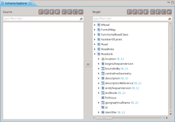
Da poco sono stati aggiunti alcuni schemi preconfigurati legati a INSPIRE, che si possono trovare nella tab denominata presets. Nel nostro caso lo schema di interesse è presente:

Definire lo schema di partenza
La definizione dello schema di partenza può essere una procedura semplice o molto complessa, dipendentemente dal formato in cui si sono mantenuti i propri dati (e questa è indubbiamente una scienza a parte). Hale permette l’import dello schema da file, ma anche da servizi WFS. Per set di dati molto semplici è possibile generare uno schema estraendolo da shapefile.
Come per il target schema, partendo nuovamente dal menu di import, procediamo ad importare il source schema:
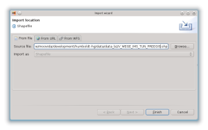
per trovarci con la seguente situazione:

Nell’immagine la selezione è stata poi posizionata sui due tipi da mappare.
Come mappare gli schemi
Mappatura del tipo
La prima operazione da fare, è quella della mappatura dei tipi principali, in questo caso V_WEGE_IMS_TUN_FREEGIS verso il RoadLink INSPIRE.
Il dato di partenza pero’ contiene tutto il transport network (strade, ferrovie, etc), quindi bisogna procedere a creare una regola per estrarre solo le strade.
Con un GIS questa operazione è abbastanza triviale. In uDig l’operazione può essere fatta con il linguaggio CQL (Constraint Query Language).
Ad esempio ponendo delle condizioni sul campo giusto possiamo isolare le ferrovie:

oppure, cosa necessaria al nostro esempio, le strade:

Il motivo per il quale vi cito uDig è duplice. Perché è il GIS con il quale lavoro e che supporto in modo attivo, ma anche perché Hale supporta lo stesso identico linguaggio CQL.
E’ quindi possibile creare un condition context:
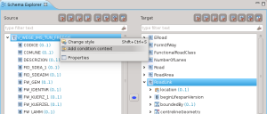
usando come condizione esattamente la stringa testata in uDig:

A questo punto Hale crea un nuovo tipo in base alla condizione imposta e sarà quello che verrà mappato attraverso un’operazione di Retype:
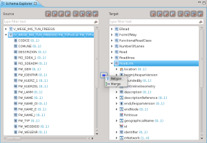
Una volta conclusa la procedura guidata, la mappatura sarà visualizzata nello schema explorer e nella vista dell’Alignment:
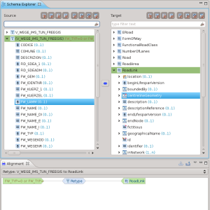
Mappatura degli attributi
Non voglio tediarvi con la descrizione dei vari attributi, quindi riassumerò solo alcune operazioni che si possono applicare per la mappatura degli attributi
Formattazione di stringhe

Permette di concatenare le stringhe dei diversi campi dello schema di partenza e delle costanti aggiunte manualmente per creare una stringa nello schema di arrivo:
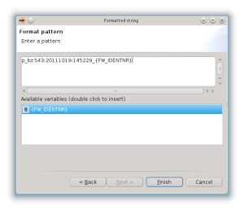
Appena applicata la mappatura, viene visualizzata nella Alignment View e la vista delle proprietà ci fornisce una descrizione dell’operazione applicata:

Classificazione
La classificazione è forse una delle operazioni più importanti, permette di mappare classi di valori.

Un esempio molto semplice è la mappature fra dei valori interi 0/1 al loro booleano nello schema di arrivo:

Mappatura della geometria
E’ possibile eseguire la mappatura di geometrie:
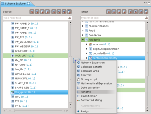
Il tipo nel nostro caso è lo stesso, quindi una operazione di rename è sufficiente:

Non mi spingo oltre con la descrizione del processo di mappatura. Accenno solo al fatto che è possibile utilizzare anche degli script, cioè dei frammenti semplificati di programmi, che rendono possibili trasformazioni personalizzate molto complesse.
Controllo mappatura e trasformazione dati
Una volta conclusa la mappatura, la vista delle trasformazioni è quello che fa per noi. Ci permette di dare una controllata finale al grafico della trasformazione
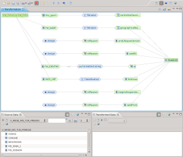
e la possibilità di caricare un set di dati per eseguire una trasformazione secondo la mappatura precedentemente prodotta.
La procedura di import dei dati è simile a quella degli schemi, selezionando source data come tipo di import:

Il file da importare nel caso di questo esempio è lo stesso usato per definire lo schema:

Una volta importato il dato, viene visualizzato nella parte bassa dell’applicativo un set di esempio di dati originali e trasformati. Questo è molto utile per avere un idea dell’effettiva bontà della mappatura:

E’ infine possibile esportare il dato trasformato in formato GML, come richiesto da INSPIRE. Dal menu di export

è possibile accedere alla procedura guidata che definisce il formato di output e poi esegue l’operazione di export:

Conclusioni
Non è facile scrivere un breve articolo riguardante strumenti così complessi. Me ne sono reso conto in modo sempre più decisivo durante la stesura di questo articolo.
Spero comunque di essere riuscito a suscitare interesse per Hale.
Spero che sia evidente l’importanza di avere uno strumento aperto e trasparente in processi di questo tipo. Personalmente starei attento a generare dipendenze da software chiusi e proprietari in processi complessi quali la migrazione dei dati. Queste procedure infatti si protraggono anche per parecchio tempo; non di rado passano per sperimentazioni, tentativi e possibili cambi di attori. Un software aperto a tutti – invece – permette maggiore autonomia e dà la possibilità, volendo, di seguire i processi a tutti i livelli desiderati. Non va dimenticato che in questi contesti è spesso necessario adattare lo strumento a casi specifici, quindi avere la possibilità di estenderlo e modificarlo può essere una carta vincente.
Spero infine che sia chiaro che la trasformazione di dati fra schemi non è una cosa impossibile (in caso la fatica sta nell’apprendere gli schemi INSPIRE). Ci sono strumenti validi a supporto e Hale - a mio avviso - è uno fra questi. Esorto le amministrazioni a cercare gli esperti dei dati sul proprio territorio e non affidarsi a softwarehouse che promettono il fatidico pulsante magico… non è realistico. I professionisti locali del settore conoscono bene lo stato dei dati e le reali problematiche ad essi legati e nessuno più di loro desidera che i dati migrati siano della giusta qualità.
Infine, ai temerari e amanti del genere lascio il link al video informativo reso disponibile dal DHP, nel quale vengono introdotti i tutorial inseriti dentro a Hale sotto forma di procedure guidate, che ne facilitano l’apprendimento.
Posted in osgeo, Strumenti | 5 Comments »
15 febbraio, 2012 | di Pietro Blu Giandonato
Ieri mattina ho avuto modo di partecipare alla conferenza stampa dell’assessore Angela Barbanente, che assieme alla dirigente del Servizio Assetto del Territorio regionale Francesca Pace, alla presidente Sabrina Sansonetti e al direttore Francesco Saponaro di Innovapuglia e alla responsabile del SIT regionale Tina Caroppo, hanno presentato l’ortofoto 2010 che la Regione Puglia ha acquisito in “riuso” dall’Agenzia per le Erogazioni in Agricoltura (AGEA). In effetti la cessione non è avvenuta a titolo gratuito, l’assessore non ha specificato la somma pagata, pur assicurando si tratti di una cifra “simbolica”.

Riguardo il riuso dei dati tra Pubbliche Amministrazioni, purtroppo la normativa europea e nazionale (se parliamo di dati geografici la Direttiva INSPIRE e il suo D.Lgs. di recepimento) dà facoltà al soggetto detentore di cedere i dati dietro pagamento di un corrispettivo, che dovrebbe ricompensare i costi di produzione e aggiornamento del dato (per approfondimenti a riguardo vi rimando a quest’altro mio articolo).
Le caratteristiche dell’ortofoto AGEA 2010
Fino a poco tempo fa i dati di base della Regione Puglia erano costituiti unicamente dalle ortofoto CGR del 2005 e del 2006, da quest’ultima poi sono state derivate la CTR numerica in scala nominale 1:5.000, e la carta di uso del suolo (in realtà un dato di copertura del suolo), oltre a un DSM a 8 metri, tutti dati dei quali avevo parlato sempre su TANTO in questo articolo.
Questa ortofoto AGEA del 2010 costituisce dunque un importante aggiornamento della base imagery, caratterizzata da scala nominale 1:10.000 e risoluzione a 50 cm, con la differenza sostanziale però che mentre per gli enti locali pugliesi i singoli fotogrammi sono disponibili gratuitamente, per cittadini e imprese è fruibile solo ed esclusivamente mediante servizio WMS (i dettagli li trovate qui), e non è scaricabile liberamente come per i dataset che ho citato prima.
Il servizio WMS che eroga dati raster del SIT Puglia, mette a disposizione due strati relativi alla ortofoto AGEA 2010: uno relativo all’intera copertura regionale, l’altro solo per la fascia costiera (circa 1 km di ampiezza). Le differenze tra i due però sembrano sostanziali, pur essendo riferiti entrambi al 2010 le riprese non coincidono temporalmente, e la definizione del dato costiero è nettamente migliore di quello totale, probabilmente a causa del ricampionamento a seguito di compressione e mosaicatura dei fotogrammi originali nel formato ECW. Potete apprezzare il confronto tra le varie ortofoto nella mappa qui sotto.
Clicca qui per ammirare la mappa a pieno schermo realizzata con Leaflet…
Con licenza parlando…
Il problema del riuso dei dati pubblici è come sappiamo tutti uno dei grossi nodi da sciogliere. Logica vorrebbe che un dato pagato con le tasse dei cittadini, ritorni ad essi senza costi ulteriori, e che se ne possano fare anche usi commerciali, il minimo sindacale dunque sarebbe associarvi una licenza CC BY.
I dati geografici scaricabili dal SIT Puglia (ho scritto un articolo che li annovera in un compendio più ampio) sono sottoposti a due differenti disclaimer (primo e secondo) che ne vietano comunque la cessione a terzi e il riuso a fini commerciali. Insomma, un professionista del territorio (ingegnere, architetto, geologo) non potrebbe a questo punto usare i dati del SIT Puglia per il proprio lavoro. Una evidente contraddizione che ha necessità di essere risolta. In passato, le molte email scambiate con il servizio tecnico del SIT Puglia per ottenere chiarimenti sulla licenza d’uso non hanno portato a nulla.
L’occasione della conferenza stampa è stata dunque per me un’occasione imperdibile per capire direttamente, dall’assessore al ramo e dalla responsabile del SIT Puglia, come interpretare la questione.
Ho dapprima contestualizzato il mio intervento, sottolineando innanzitutto come l’hype sugli open data sia ormai altissimo nell’opinione pubblica italiana, e come molte Pubbliche Amministrazioni stiano abbracciandone la causa, aprendo i propri dati, dando vita a portali dai quali poterli fruire – non ultimo il Governo italiano - e concorsi di idee per il loro sfruttamento, come Apps4Italy. E naturalmente ho ricordato l’esistenza della proposta di legge regionale su open software e open data, che si spera verrà presto portata in consiglio. I nostri interlocutori hanno mostrato di essere ben consapevoli di tutto ciò.
Ho poi domandato con chiarezza se i dati presenti sul SIT Puglia siano (ri)utilizzabili anche a scopi commerciali, ad esempio se un professionista del territorio può impiegarli nelle relazioni tecniche che redige abitualmente per il proprio lavoro. E la risposta è stata più che affermativa. Infatti la Regione, ad esempio nelle procedure per la redazione dei PUG comunali, spinge fortemente affinché i tecnici usino proprio i dati del SIT Puglia. Mi sono sentito a quel punto di rilanciare, chiedendo se i dati regionali possano essere utilizzati da soggetti terzi anche a scopi commerciali, ad esempio realizzando servizi e applicativi destinati a cittadini e imprese. Tante volte abbiamo detto che favorire l’apertura dei dati pubblici costituirebbe un formidabile volano per far ripartire l’economia nazionale. Anche qui ho ottenuto una risposta convintamente positiva.
Ricapitolando, la Regione Puglia è assolutamente convinta ad aprire i propri dati a tutti, rendendoli accessibili e riutilizzabili, ma abbiamo i disclaimer per i dati del SIT Puglia che di fatto ne impediscono l’uso a scopi commerciali. A questo punto va fatta chiarezza una volta per tutte, la Regione dovrebbe adottare una licenza che consenta davvero il riuso, ovvero almeno CC BY.
…nell’attesa che presto anche in Puglia nasca il portale dati.puglia.it
Un grazie speciale a Andrea Borruso, che mi ha indotto a sporcarmi le mani con Leaflet, una strepitosa libreria JS – che ho usato per questo articolo – alla portata di (quasi) tutti per realizzare mappe su web esteticamente belle, molto performanti ed estremamente flessibili.
Posted in Dati | 25 Comments »


{kind=link}
{kind=link}
{kind=link}
{kind=link}
{kind=link}
{kind=link}
{kind=link}
{kind=link}
{kind=link}
{kind=link}